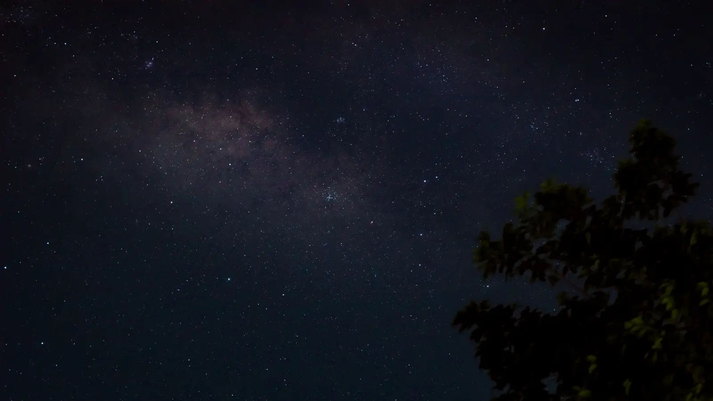
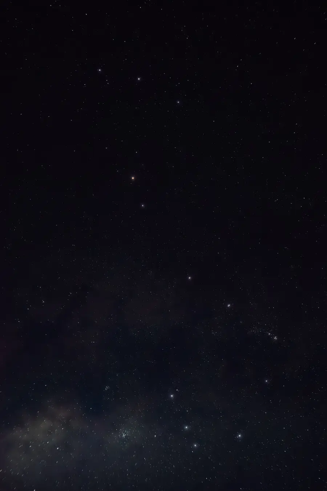
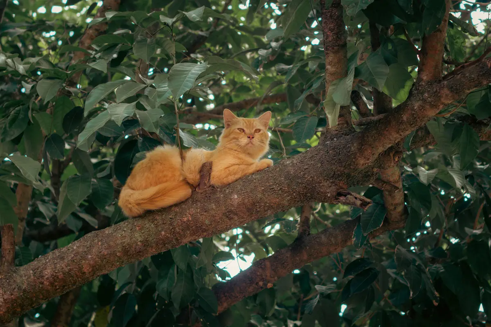
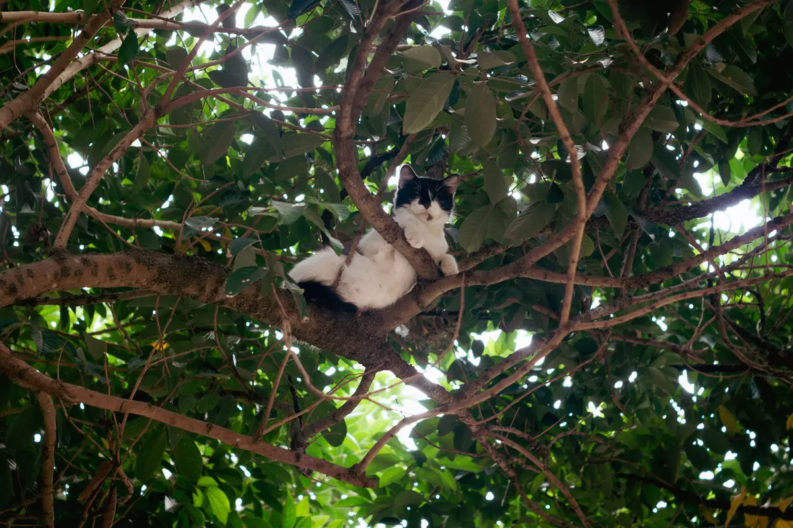
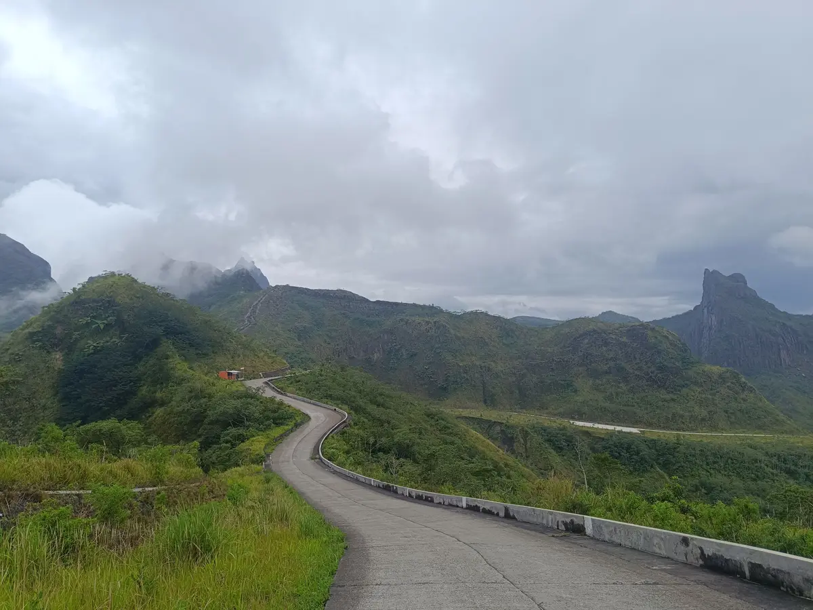
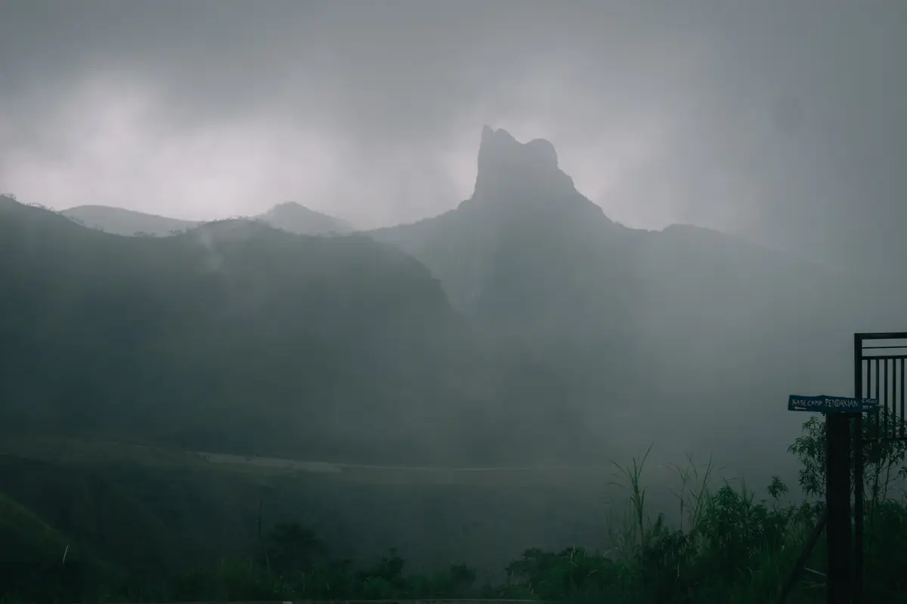
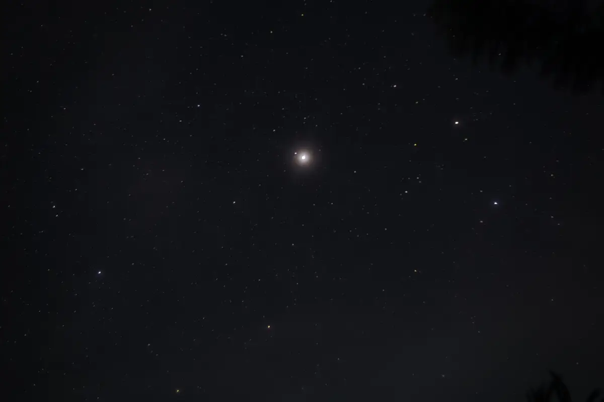
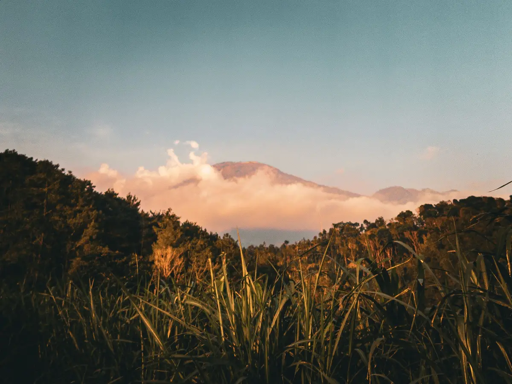
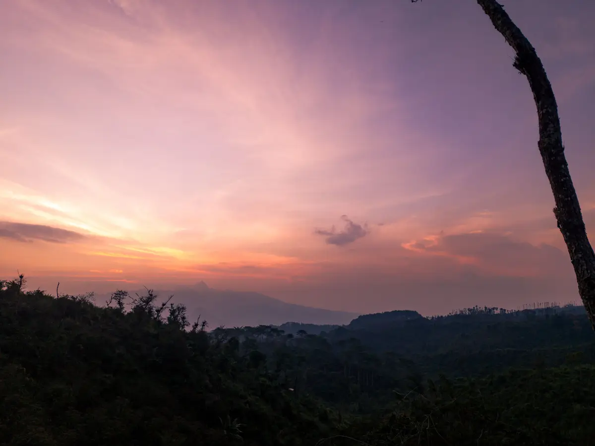

Photography
Farhan Kurnia Febriansyah
Abstract
Sometimes you just need to take ur mind off things
Keywords: all, street landscape astrophotography cat portrait macro other

Plate 1: milky way. Sony a6000, Mar 2026.

Plate 2: Scorpius. Sony a6000, Mar 2026.

Plate 3: Random Cat. Sony a6000, Jun 2026.

Plate 4: random cat 2. Sony a6000, Jun 2026.

Plate 5: Molly. Sony a6000, Sept 2025.

Plate 6: otw kelud. Xiaomi Redmi Note 12 Pro, Jan 2026.

Plate 7: pulang dari kelud. Sony a6000, Jan 2026.

Plate 8: Gemini. Sony a6000, Jan 2026.

Plate 9: middle of nowhere 1. Xiaomi Redmi Note 12 Pro, Aug 2025.

Plate 10: middle of nowhere 2. Xiaomi Redmi Note 12 Pro, Aug 2025.